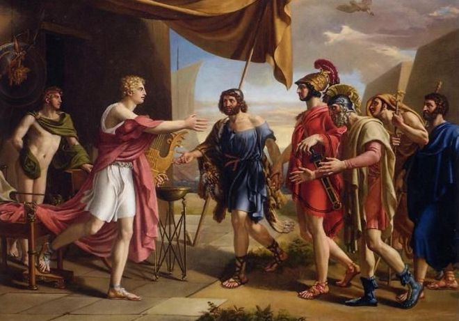
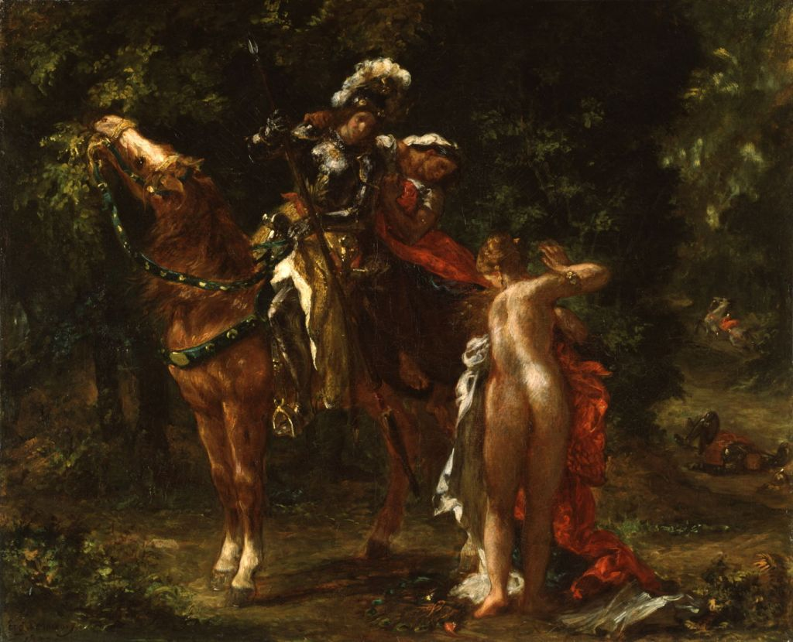
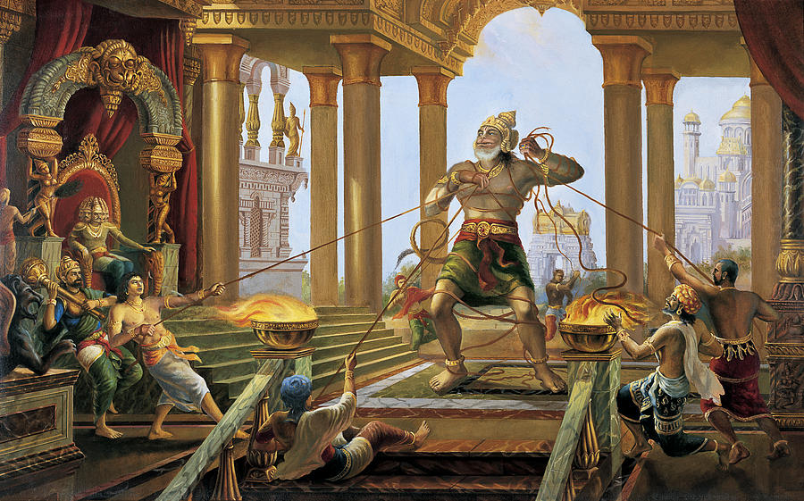
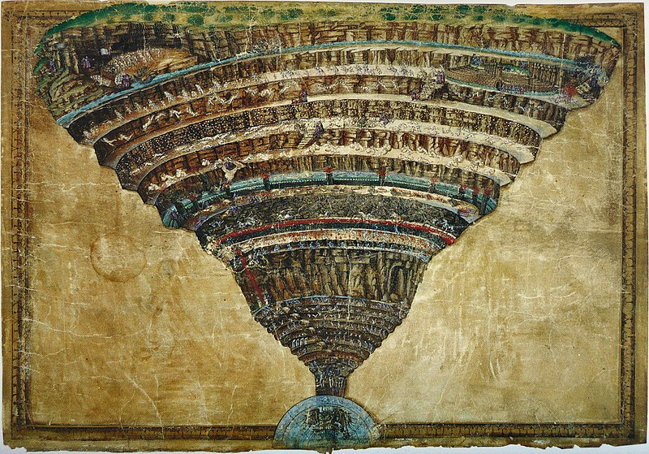
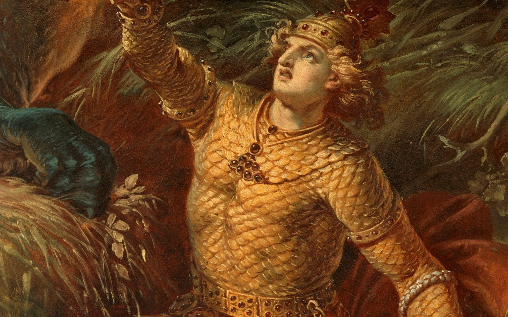
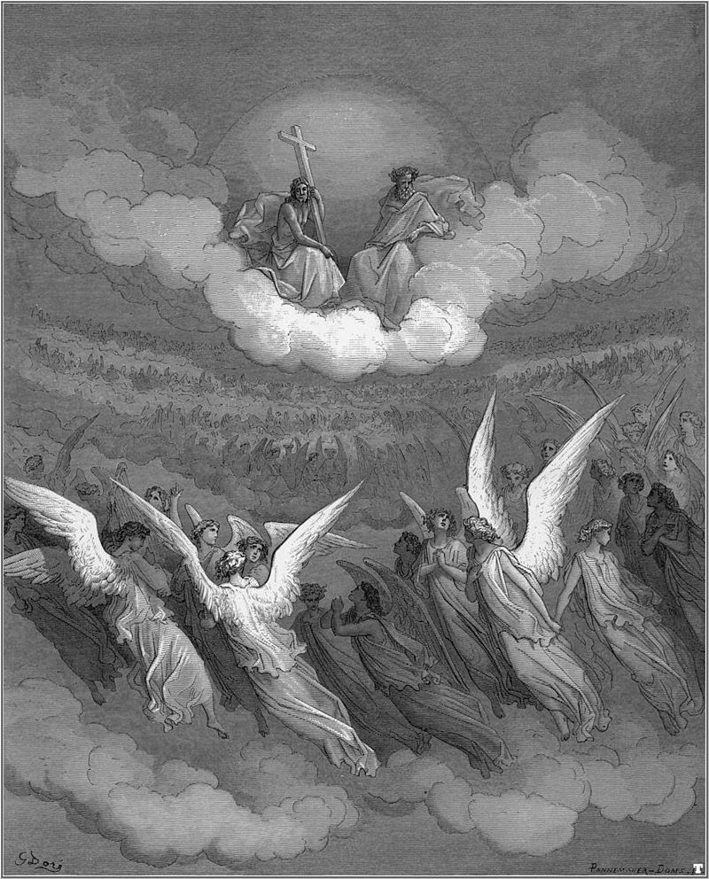

What Is an Epic?
An epic poem is a lengthy, narrative work of poetry. These long poems typically detail extraordinary feats and adventures of characters from a distant past. The word “epic” comes from the ancient Greek term “epos,” which means “story, word, poem.”
How Did Epics Originate?
Epic poems trace back to some of the earliest human civilizations—both European and Asian. Take the Epic of Gilgamesh, considered by some scholars to be the oldest surviving example of great literature. The poem is thought to have been written in approximately 2100 BC and traces back to ancient Mesopotamia. It tells of the ancient king Gilgamesh, a descendant from the Gods, who embarks on a journey to discover the secret of immortality.
What Are the Characteristics of an Epic Poem
The meter of epics varies depending on cultural custom. Ancient Greek epics and Latin epics were typically composed in dactylic hexameter. Old Germanic epics (including those in Old English) typically contained non-rhyming alliterative verse. Later English language epics were written in Spenserian stanzas and blank verse. An archetypal epic poem typically:
Is written in a formal style
Contains third-person narration and an omniscient narrator
Frequently invokes a Muse who provides inspiration and guidance to the poet
Takes place in an era beyond the range of any living memory
Typically includes a journey across a variety of settings and terrains
Features a hero with immense bravery and resolve
Includes obstacles and circumstances that are otherworldly and even supernatural—pitting the hero against nearly insurmountable odds
Looks with concern to the future of a civilization or culture
Mahabharata by Vyasa (Sanskrit)
Mahabharata is one of the great Indian epic compiled around 8th century BC. This epic poem has about one lakh couplets in Sanskrit and it can be considered as the longest epic poem of the world. This ancient epic deals with the rivalry between cousins - Kauravas and Pandavas - of a great ruling family of India . The armies of the two groups meet at the battleground at
Kurushetra in which the Pandavas can destroy the Kauravas. The epic consists of thousands of mythical and historical stories

The Mahabharata is an ancient Indian epic where the main story revolves around two branches of a family - the Pandavas and Kauravas - who, in the Kurukshetra War, battle for the throne of Hastinapura. Interwoven into this narrative are several smaller stories about people dead or living, and philosophical discourses. Krishna-Dwaipayan Vyasa, himself a character in the epic, composed it; as, according to tradition, he dictated the verses and Ganesha wrote them down.
Mahabharata by Giampaolo Tomassetti
The Iliad by Homer (Greek)
Iliad is one of the most celebrated and well known epics of the world. It is believed to be written by in 9th century BC by Homer. This poem is based on the legend of Trojan war. Iliad means the tale of ilios or the tale of troy. It narrates the story of the Greek struggle to rescue Helen, from Trojans, the wrath of Achilles and subsequent destruction of Troy.

The Iliad is an epic poem, written by Homer, that covers the quarrels and fighting near the end of the Trojan War. The story opens nine years into the war, which basically started because Paris, son of King Priam of Troy, kidnapped Helen from Menelaus, a Greek and brother of Agamemnon, King of Mycenae. Agamemnon decides to go to war with the Trojans, and convinces other armies to join him.
The Iliad isn't just about the soldiers and kings, though. The gods, too, find their own source of entertainment by participating in the war on various levels. At the core of this epic is the legend of Achilles.
Achilles and Agamemnon by Gottlieb Schick
The Odyssey by Homer (Greek)
Odyssey is believed to be written in 9th century B.C by Homer the great Greek poet. It describes the exploits of the Odysseus during his homecoming after the fall of Troy. This great epic follows the Aristotelian conventions of epic poem. The poem describes the obstacles faced by Odysseus, varied tests of gods that he had undergone, his affair with nymph Calypso on the homecoming voyage, and his return to his kingdom.

The Odyssey is Homer's epic of Odysseus' 10-year struggle to return home after the Trojan War. While Odysseus battles mystical creatures and faces the wrath of the gods, his wife Penelope and his son Telemachus stave off suitors vying for Penelope's hand and Ithaca's throne long enough for Odysseus to return. The Odyssey ends as Odysseus wins a contest to prove his identity, slaughters the suitors, and retakes the throne of Ithaca.
Odysseus and Nausicaa in the Odyssey
by Francesco Hayez
Orlando furioso by Ludovico Ariosto (Italian epic)
Orlando Furioso is a famous epic with full of supernatural, allegorical and romantic adventures. The main theme of the epic is the war between Christians and pagans. Even though Ariosto, the writer, has depended much on the Graeco -Roman literary tradition of earlier writers for characters and incidents, it is a great epic poem due to his smooth versification and technical facility which make the poem vigorous and brilliant, with ironic and humorous contrasts.

The chivalric epic “Orlando Furioso” by Ludovico Ariosto is considered to be one of the most famous works of Italian and European literature. It consists out of 46 cantos and it was written in Italian using octave and hendecasyllable.
It was firstly published in 1516 and it had 40 cantos. The author worked and changed the epic poem and after the second publication in 1521, he published the last one that was expanded and perfected in 1532.
There isn’t a single plot to follow up with and there is a variety of characters. As the three main plots of the epic poem, we can extract Orlando’s love for Angelica, the war between Charlemagne and the Saracens and the love between Ruggiero and Bradamante.
Marphise by Eugène Delacroix
Ramayana by Valmiki (Sanskrit)
Ramayana is a great Indian epic poem written in 5th century BC. It is the oldest and most popular epic of Indian sub continent, believed to be written by Valmiki. It is written in Sanskrit, one of the earliest Indo - European languages, and has around 2400 couplets in seven sections. Ramayana means "the journey of Rama". It depicts the conflict between Rama, the incarnation of God Vishnu, and Ravana who can be taken as the representative of evil forces and the final victory of the God incarnated Rama in safeguarding the Dharma (Universal moral order).

The Ramayana is an ancient Sanskrit epic which follows Prince Rama's quest to rescue his beloved wife Sita from the clutches of Ravana with the help of an army of monkeys. It is traditionally attributed to the authorship of the sage Valmiki and dated to around 500 BCE to 100 BCE.
Comprising 24,000 verses in seven cantos, the epic contains the teachings of the very ancient Hindu sages. One of the most important literary works of ancient India, it has greatly influenced art and culture in the Indian subcontinent and South East Asia, with versions of the story also appearing in the Buddhist canon from a very early date.
Hanuman In Ravana's Palace by Vrindavan Das
The Divine Comedy by Dante Alighieri (Italian epic)
Divine Comedy is a celebrated epic poem written by Dante in 14th century. The narrator is lost in a forest. The poet narrator meets Virgil who guides him through the world after death. Virgil takes him through Hell. They go through the base of the purgatory and he can see the terraces of it where the sins of those who are ultimately to be saved are cleansed away. Then Beatrice guides him to the ultimate heaven. The poem ends with his moment of illumination and the vision of trinity.

The Inferno is the first part of Dante Alighieri's poem, the Divine Comedy, which chronicles Dante's journey to God, and is made up of the Inferno (Hell), Purgatorio (Purgatory), and Paradiso (Paradise). The poems are quite short: it would take about as long to read the whole Inferno as it would to read the detailed canto summaries and analyses, although they might be helpful for understanding Dante's difficult language. In the Inferno, Dante starts on ground level and works his way downward; he goes all the way through the earth and Hell and ends up at the base of the mountain of Purgatory on the other side. On the top of Purgatory there is the terrestial paradise (the garden of Eden), and after that he works his way through the celestial spheres.
La Carte de l'Enfer by Sandro Botticelli
Beowulf Anonymous (Old English)
Beowulf, one of the earliest epic of the world, is based on a Scandinavian legend. It was written around 750 AD by an anonymous writer and it has about 3000 lines.
Beowulf, the great warrior hero, saves Horthgar, the king of Danes, from the attack of Grendel, a terrible monster, by killing it. Grendel's mother attacks him to avenge the death of his son. In the fight, Beowulf kills the mother - monster also, but he gets a mortal wound in the fight and succumbs to it.
This epic, the most celebrated survival from Old English literature, is also the earliest extant poem in a modern European language.

Beowulf, heroic poem, the highest achievement of Old English literature and the earliest European vernacular epic. It deals with events of the early 6th century and is believed to have been composed between 700 and 750. Although originally untitled, it was later named after the Scandinavian hero Beowulf, whose exploits and character provide its connecting theme. There is no evidence of a historical Beowulf, but some characters, sites, and events in the poem can be historically verified. The poem did not appear in print until 1815. It is preserved in a single manuscript that dates to circa 1000 and is known as the Beowulf manuscript (Cotton MS Vitellius A XV)
Royal Hall by Unknown
Paradise Lost by John Milton (English)
Paradise Lost is one of the greatest English literary epic based on the theme of fall of man given in the old Testament and it was written in 17th century by John Milton. The great poet wrote it " to justify the ways of god to man". The epic poem begins with the the Satan's devilish plans to to take revenge against god for his expulsion from heaven. Some critics has opined that Milton's Satan is the hero of the epic poem due to the excellent depiction and exposition of that character. This epic is celebrated for Milton's grand style, his interpretation of Biblical myth and Christian doctrine.

Paradise Lost is about Adam and Eve--how they came to be created and how they came to lose their place in the Garden of Eden, also called Paradise. It's the same story you find in the first pages of Genesis, expanded by Milton into a very long, detailed, narrative poem. It also includes the story of the origin of Satan. Originally, he was called Lucifer, an angel in heaven who led his followers in a war against God, and was ultimately sent with them to hell. Thirst for revenge led him to cause man's downfall by turning into a serpent and tempting Eve to eat the forbidden fruit.
The poem concerns the biblical story of the Fall of Man: the temptation of Adam and Eve by the fallen angel Satan and their expulsion from the Garden of Eden. Milton's purpose, stated in Book I, is to "justify the ways of God to men."
The Heavenly Host by Gustave Doré
Shahname by Firdousi (Persian)
Shah Name is great Persian epic based on the historical and mythical accounts of around fifty Persian kings. Shah Name means "book of kings". The epic begins the mythical creation of Persia and ends in the narration of the stories of historical kings. The most famous story of Shah Name is about the legendary king of Rostam and Sohrab, his son.

The Shahnameh is an enormous poetic opus written by the Persian poet Ferdowsi around 1000AD, is the national epic of the Persian speaking world. The Shahnameh tells the mythical and historical past of Iran from the creation of the world up until the Islamic conquest of Iran in the 7th century.
Aside from its utmost literary importance, the Shahnameh written in almost pure Persian, had been pivotal for reviving the Persian language subsequent to the influence of Arabic.
The Court of Gayumars by Shah Tahmasp
Aeneid by Virgil (Latin)
Aeneid is a great epic which is based on the legend of Aeneas. It is Roman nationalistic and patriotic poem which narrates the evolution of great Roman empire. This poem shows great dramatic skill of high order and power of description. Aeneas decides to establish a secure kingdom for his people in Italy. During the long and perilous voyage for it their ships are wreaked on the coast of Africa. The Dido of Carthage invites them which prolongs their voyage. In the next voyage, they reach Latinum, ruled by Latinus. Aeneas marries his daughter Lavinia after killing Turanus, another suitor of her. He establishes a city of lavinium which becomes a base for great Roman empire later.

Aeneid, Latin epic poem written from about 30 to 19 BCE by the Roman poet Virgil. Composed in hexameters, about 60 lines of which were left unfinished at his death, the Aeneid incorporates the various legends of Aeneas and makes him the founder of Roman greatness. The work is organized into 12 books that relate the story of the legendary founding of Lavinium (parent town of Alba Longa and of Rome). The town is founded by Aeneas, who was informed as he left the burning ruins of Troy that it was his fate to found a new city with a glorious destiny in the West.
The Fire in the Borgo
by Giulio Romano